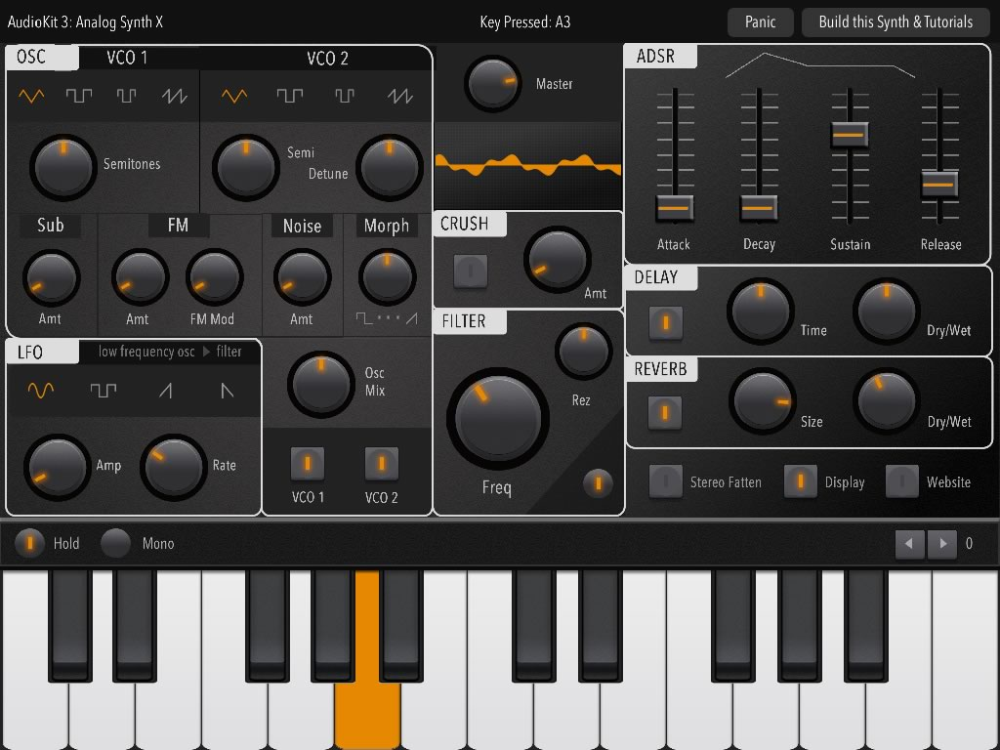

Introduction
Analog Synth X is a full-featured iPad synthesizer app completely built in Swift 2 and AudioKit 3!
The complete source code is available now as MIT open source. Meaning, you can use it as a learning tool, or even create your own synth app from the code. There's no charge or fee to use the code. Use it as a starting point to create the synth of your dreams!
The code is now shipping with the current version of AudioKit 3, now avail to download. You can find the code for Analog Synth X in the iOS download package. The code is in the "Examples > AnalogSynthX" folder
|

|
Synth Features
- 5-Voice Virtual Analog Synthesizer
- Dual VCO-style Oscillators
- MIDI in for notes
- Dedicated Sub Oscillator
- FM Oscillator w/ Mod (Nord Lead style)
- 4-Pole Vintage Low-Pass Filter (Moog style)
- Oscillator Morph Knob (Access Virus style)
- Beautiful Sean Costello Reverb
- Free-running LFO w/ 4 waveforms
- Multi-tap (ping-pong) delay
- ADSR Envelope
- Detune Oscillators by Semitone & Hz
- Hold & Mono modes for keyboard
- Noise generator
- 8-Bit Crusher
Learning More About the Code
To understand the code quickly, AudioKit 3 has extensive documentation online. Plus, there are over 100 audio playgrounds to get you up to speed on all the audio methods. If you are having trouble, theres even a Google group online for questions regarding AudioKit.
Keep us posted if you build something cool with the code!
Sound Tips for Analog Synth X:
- You can get a pure Sine wave by (1) turning the Osc Mix to the left (2) turning off VCO1 (3) Turning the FM up!
- Use the morph knob between square and pulse for basic PWM control.
- Not getting enough low-end for your liking? Turn down the Rez.
- Use 2 saws and detune VCO2 for a shimmery vintage Polysynth sound. Slowly open the filter to your taste.
- The reverse saw LFO (the last wave setting on the LFO) can simulate a basic voltage-controlled note repeat.
- Keep dry/wet knobs under 50% for a more powerful sound.
- Turn the ADSR Release down to zero and turn the echo on to hear how the echo taps fire.
Get in the Code:
- The sub is set to a sine wave for a more powerful bass tone. You can change it to a square if you'd like the synth to have more of a vintage feel. You can also experiment between -12/-24 settings.
- Try changing the preset knob bounds (minimum/maximum) in the SynthViewController to extremes to play a synth with wild settings!
- Sub and FM are tracked to the keyboard. Try tracking them to VCO1 for a more accurate Analog synth effect. (i.e. If you detune VCO1, FM & Sub also detune).
Keep us posted on any apps you make with the code, we'd love to hear from you!
You can follow @AudiokitMan and @goFecher on Twitter for more tips & updates on Analog Synth X and other projects.